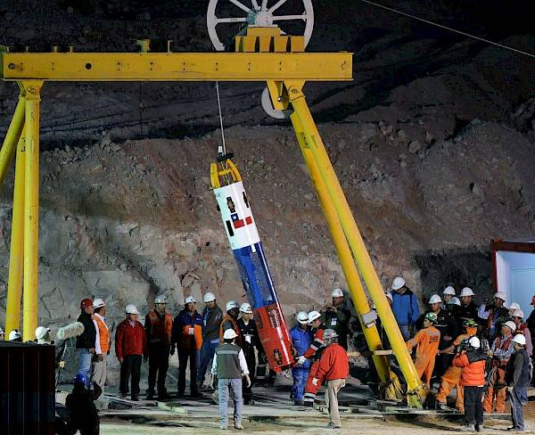

|

|
Um dos fatos de maior repercussão no
cenário Internacional em 2010 foi o resgate dos 33
trabalhadores presos na mina San José, no Deserto
do Atacama, no Chile, a 622 metros de profundidade,
por mais de dois meses. O trabalho de resgate, em
outubro, durou mais de 24 horas e foi acompanhado
por emissoras de televisão de todo o mundo.
A história veio à tona em agosto, quando o
presidente Sebastián Piñera informou que os
trabalhadores estavam vivos. Os “heróis” foram
homenageados no palácio presidencial e um deles
correu a Maratona de Nova Iorque.
|
|
|
Sobreviver por longos 17 dias a 720 metros embaixo da
terra já fora um feito admirável. O grupo passou o tempo
todo racionando os mantimentos que ficavam estocados no
refúgio. Cada um alimentou-se de apenas duas colheres de
atum, um pouco de leite e metade de um biscoito a cada 48
horas. Estimava-se que cada um tivesse perdido cerca de 8
ou 9 quilos. Essa fase, no entanto, ficara para trás. Com
a bem-sucedida escavação feita pela sonda, as equipes
trabalhando na superfície tinham agora um túnel de 15
centímetros como canal de contato com os mineiros
soterrados.
|